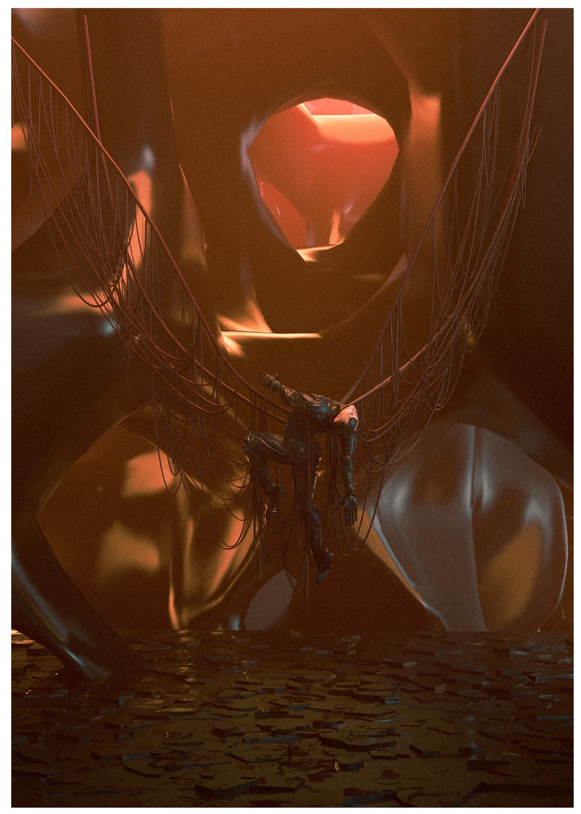
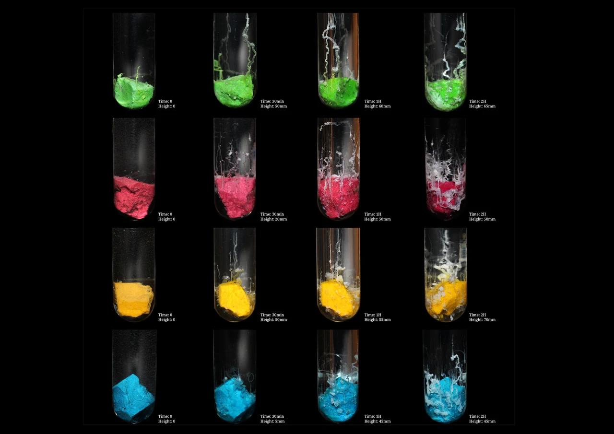
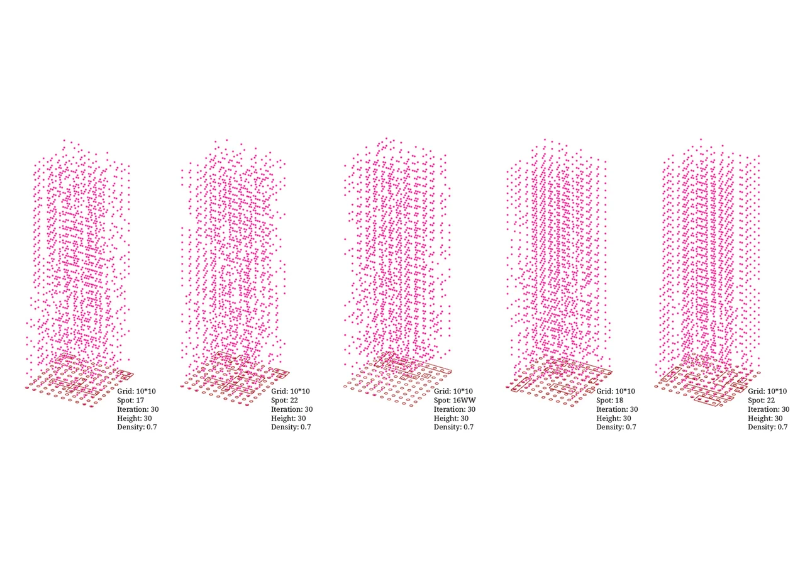
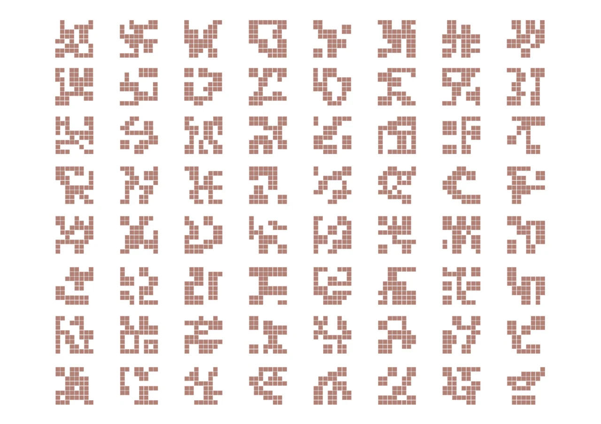
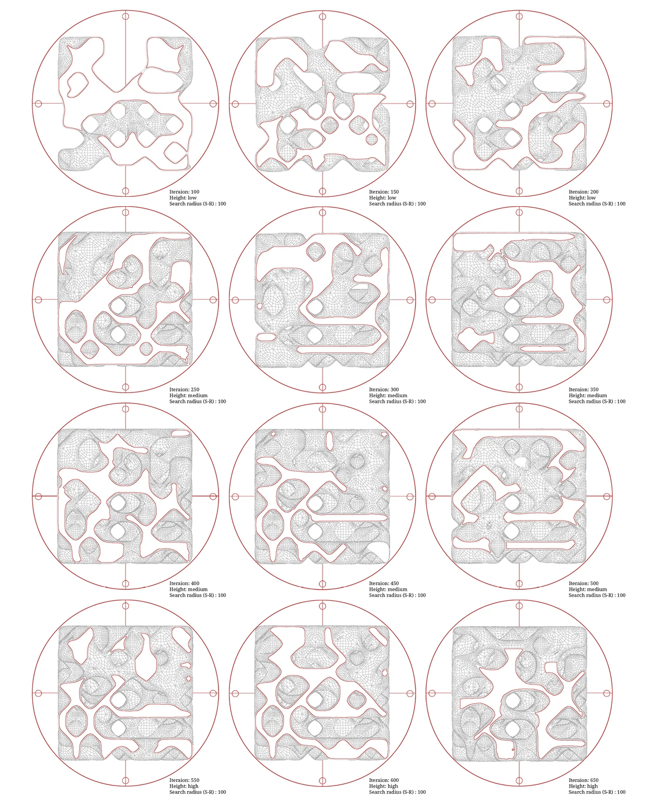
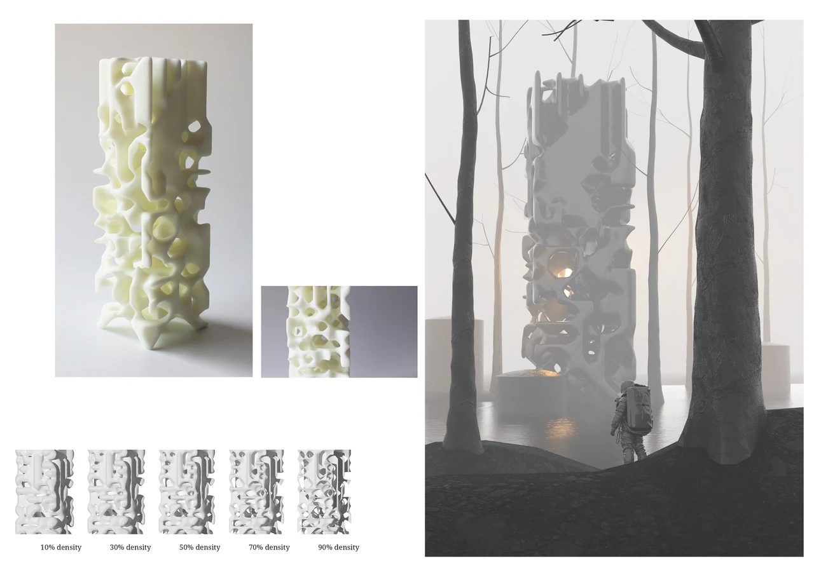

COM–α: Self-Organization
Personal ProjectTools & Technologies: Processing / Python particle systems, Cellular automata, Topological search algorithms, Voxel-based modeling
Introduction
Self-Organization investigates how complex structures arise from simple interactions across different material and computational systems. Instead of treating form as the result of top-down design, the project examines how bodies, pigments, particles, grids, and voxels reorganize themselves under pressure, constraint, and time.
Through a sequence of experiments—chemical diffusion, particle aggregation, discrete glyph generation, and voxel-based morphogenesis—the project constructs a cross-scalar language of emergence. Each image captures a different stage in this unfolding: identity dissolving, material reorganizing, computation stabilizing, and form cohering into architecture.
Self-organization is presented here not as an abstract theory, but as a visible, material, and spatial behavior that can be observed, computed, and ultimately built.

Concept
In the experiment, the system is composed of countless equal-sized masses grouped in close proximity. None of these points possess inherent identity; each responds only to simple forces of attraction, repulsion, and growth. Yet collectively, they behave as a complex system—one in which no single point determines the final outcome.
States such as “aggregation,” “dispersion,” or “bifurcation” do not truly exist inside the system; they are human abstractions, linguistic attempts to describe phenomena that emerge from continuous interaction. For the system itself, these conditions are only fleeting transitions within a non-linear, irreversible process—similar to how natural turbulence resists confinement to any single definition.
Across iterations, dense regions stabilize toward the interior, while peripheral points—less constrained and more exposed—branch outward in unpredictable ways. Small changes in density thresholds or local force parameters generate phase shifts: subtle internal changes that propagate outward, altering the entire morphology. Selecting a 70% density threshold for fabrication captured a balance between coherence and openness, reflecting the system’s tendency to hover between order and dispersion.
Although visually reminiscent of meta-cellular automata, this system is not bound by a lattice or grid. There is no fixed adjacency, no defined “neighbor,” no closed boundary. Instead, relationships continuously stretch, weaken, collide, and reorganize—producing a state closer to continuous emergence than discrete rule sets.
In this environment, simple behaviors combine into complex clusters, just as basic symbols become language through repetition and variation. The intelligence lies not in the individual point but in the collective behavior of the whole. Finite rules yield infinite permutations; determinate processes manifest as ambiguous, shifting forms.
The resulting structure is not a final form but a momentary crystallization of computational forces—an architecture made of relationships rather than objects, of processes rather than boundaries. It asks:
-
Where do repetition and difference converge?
-
How does an open system maintain coherence amid turbulence?
- What does form become when form is no longer the goal?

Computational Logic as Design Material
The system begins with a large collection of equal-sized “masses,” none of which possess predefined identity or purpose. Each point operates under two or three minimal behaviors—attraction, repulsion, growth, or death—but the superposition of countless interactions produces structures far exceeding the simplicity of the underlying rules.
Like language, where discrete symbols combine into complex meaning through syntax, the behaviors of the individual nodes aggregate into high-level patterns, clusters, filaments, and bifurcations. No single point “creates” form; form arises only in the collective intelligence of the system.
Crucially, the states of aggregation, dispersion, or bifurcation have no absolute definition inside the system. These categories exist only as human abstractions—finite linguistic attempts to comprehend an inherently infinite, ambiguous process.


Repeated calculations reveal a consistent phenomenon:
-
the densest regions naturally occupy the interior,
-
while growth-prone individuals emerge at the periphery.
Whenever edges begin to expand, each position moves toward greater difference, generating branching structures that slowly fill the space in uneven, unpredictable ways.
By adjusting variables such as density thresholds, force-field properties, environmental constraints, and initial point distributions, multiple growth morphologies were explored. Increasing the density screening from the top 20% to 90% resulted in higher overall growth rates and more evenly distributed expansions. A threshold of 70% density was selected for the 3D-printed model, producing a balanced yet expressive outcome.

Beyond Lattices: Toward a Meta-Cellular Automaton
Although visually reminiscent of a meta-cellular automaton, the system intentionally avoids the constraints of a lattice or fixed adjacency. There are:
- no predetermined neighbors,
- no discrete grid,
- no absolute “near” or “far,”
-
no boundary conditions that define closure.
This non-lattice condition introduces genuine chaos and infinity: each cycle’s output is non-uniform, altering the conditions of the next cycle in ways that multiply uncertainty. The system becomes both computational and organic, governed by feedback that constantly redefines the rules of its own evolution.

The work challenges traditional architectural expectations of resolution, finality, and measurability. The system has no end and no intended form—its “architecture” is the resonant rhythm of relationships passing through endless cycles of emergence and decay. What is printed or visualized is merely a snapshot of an ongoing, irreversible process.
Through a blend of computational experimentation and metaphysical interpretation, the project suggests that:
-
logic can be a spatial medium,
-
process can be a form,
-
and architecture can exist without boundaries, typologies, or stable definitions.
It asks:
Where do repetition and difference converge?
How does an open system produce coherence within turbulence?
What does form mean when form is not the goal?
The result is a study of abstract yet tangible interactions—a concretization of the intangible, where computation becomes both the author and the substance of the work.